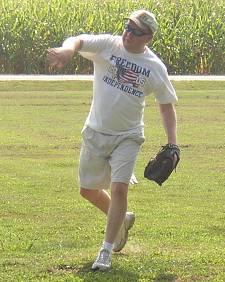
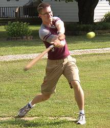
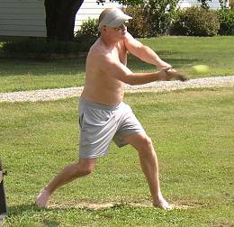
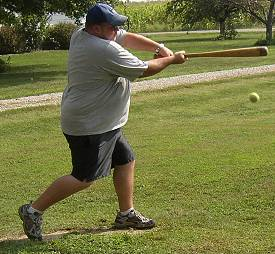
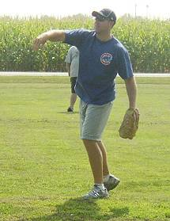
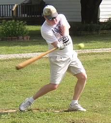
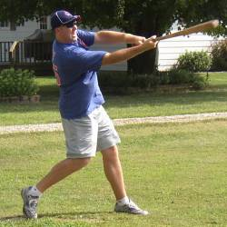
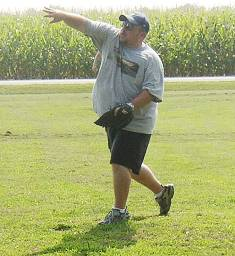

| |
|
|

Brian Garrard picked up his first career win
going 10 innings and allowing just three runs. |

Justin Massey blasted a solo homerun to tie the
game in the 7th inning and finished 5-for-15. |

Ryan Tomlinson had a career-high 8 hits in
16 at bats and scored two runs in the win. |

Paul Alf was 6-for-16 with an RBI and run scored. |

Lee Coakley allowed just one run on 4 hits in three
innings of work, but suffered the loss. |

Brian Garrard was just 1-for-16 on the day, but
knocked in the game winning run in the 10th inning. |

Lee Coakley went 4-for-15 with a solo homerun. |

Paul Alf picked up a no decision despite going 7
strong innings allowing just two earned runs and 11 hits. |
|